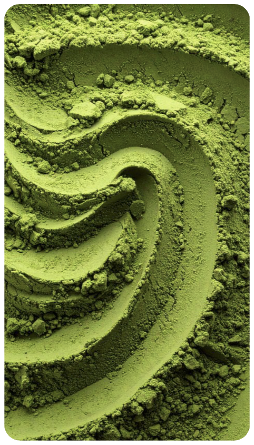
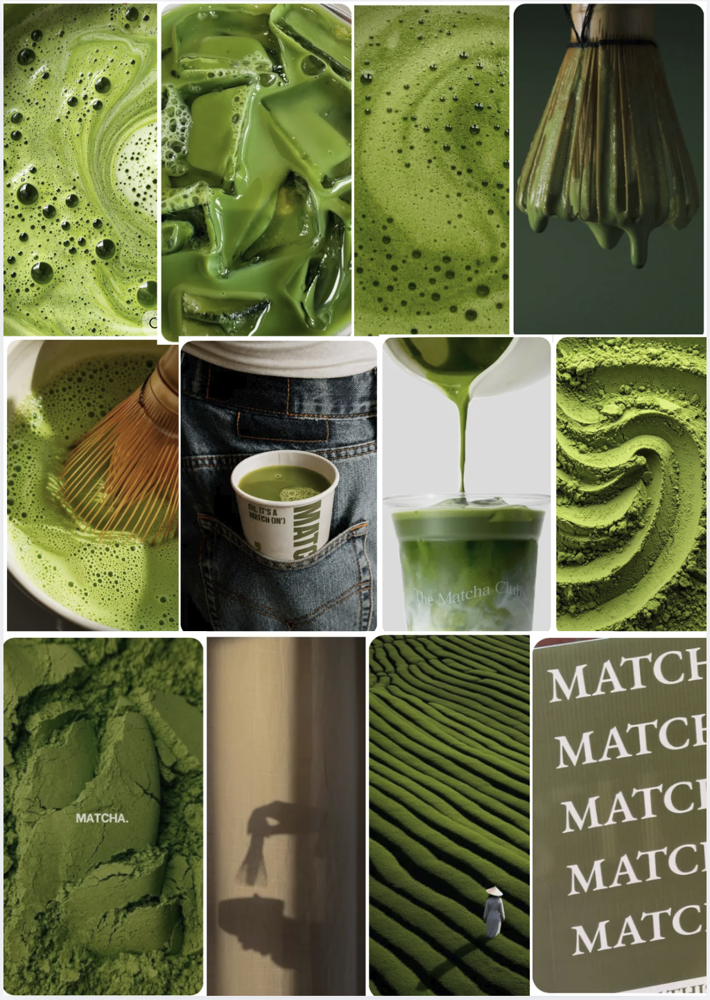
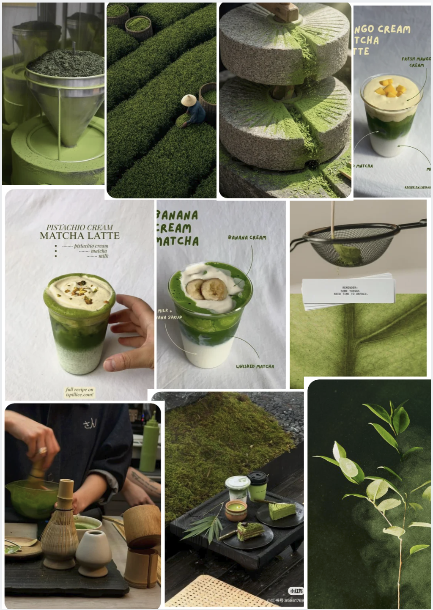
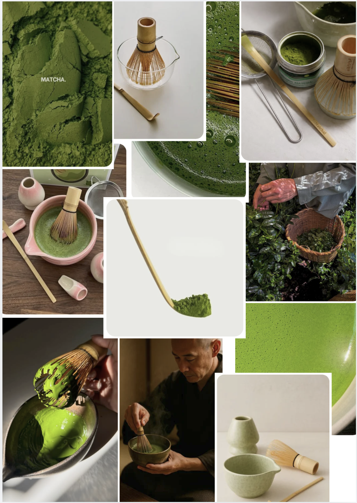
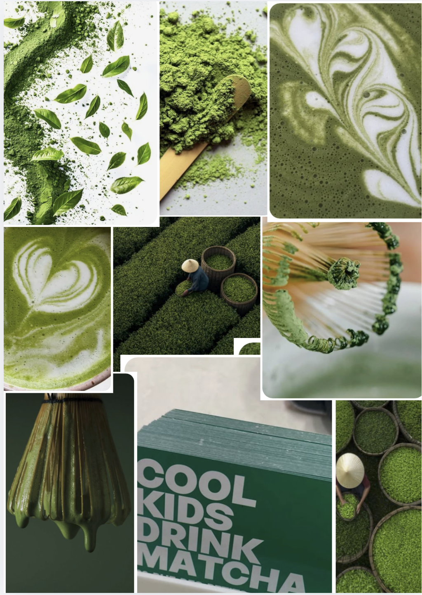
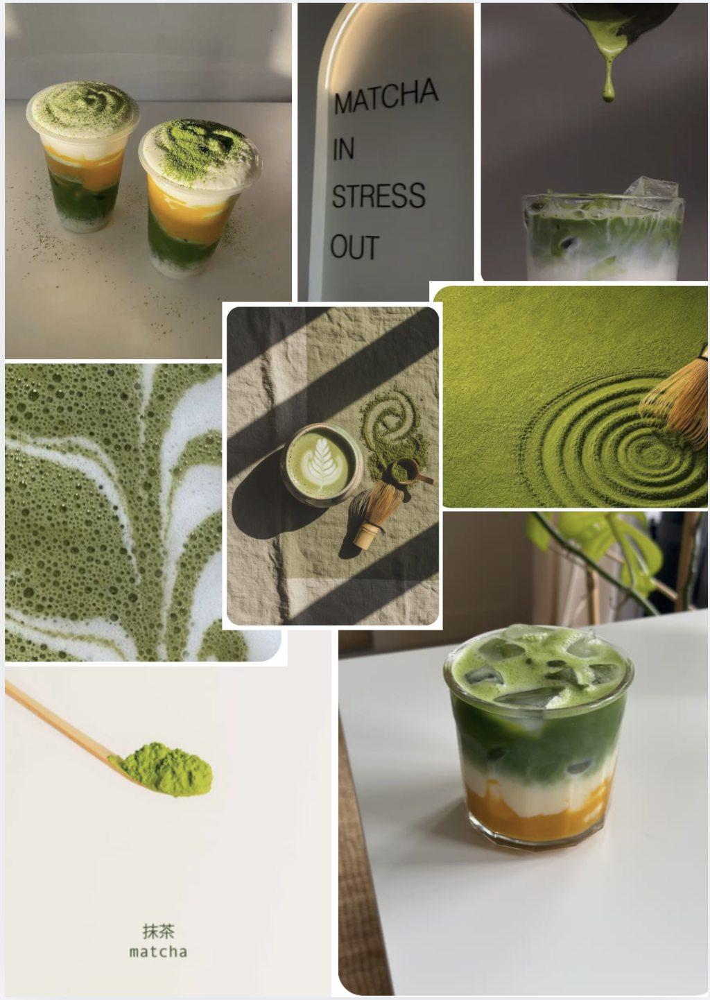

class: center, middle <!-- In deze textarea kan je in Markdown de slides aanpassen, zie https://github.com/gnab/remark/wiki voor alle mogelijkheden! --> # Digital garden concept van Annelot. --- # Inhoud 1. Onderwerp 2. Mijn bronnen 3. 50 afbeeldingen 4. Verdieping van mijn onderwerp 5. Content <p></p> --- <h1 style="margin-bottom: 10px;">Mijn onderwerp:</h1> Mijn interesse is matcha. Matcha spreekt mij aan omdat het voor mij meer is dan alleen een drankje. Ik vind de smaak, bereiding, uitstraling en cultuur eromheen interessant. Daarnaast werk ik zelf met matcha, waardoor ik steeds meer leer over hoe je een goede matcha maakt en welke verschillende combinaties er mogelijk zijn. Matcha past voor mij binnen verschillende categorieën: Japanse cultuur, vakmanschap, lifestyle en horeca. Vooral het vakmanschap vind ik interessant. Van het zorgvuldig afmeten en zeven van het poeder tot het kloppen met een chasen en het maken van verschillende matcha-drankjes. Tegelijkertijd vind ik het interessant hoe een traditioneel Japans product tegenwoordig een moderne trend is geworden, bijvoorbeeld door iced matcha en strawberry matcha. In mijn Digital Garden wil ik daarom mijn eigen matcha-wereld laten zien: hoe ik matcha maak, verschillende recepten, tools, de oorsprong en cultuur, mooie matcha-verpakkingen en mijn favoriete matcha-spots. --- # Mijn 10 bronnen om te verdiepen in het onderwerp: https://www.japan.travel/en/guide/tea-ceremony https://www.japan.travel/en/guide/japans-cultural-heritage https://www.marukyu-koyamaen.co.jp/english/about-tea/enjoy-matcha.html https://naokimatcha.com/blogs/articles/ceremonial-grade-matcha https://www.health.harvard.edu/healthy-aging-and-longevity/matcha-a-look-at-possible-health-benefits https://www.japan.travel/en/guide/japanese-superfoods https://www.japan.travel/en/experiences-in-japan https://matcha.com/blogs/news/the-history-of-matcha https://naokimatcha.com/pages/our-story https://de.pinterest.com/pin/763149099404208457/ --- <div style=" font-size: 28px; line-height: 1.5; position: absolute; top: 50%; left: 50%; transform: translate(-50%, -50%); width: 85%; "> De websites gaan over verschillende kanten van matcha, zoals de geschiedenis, Japanse theeceremonie, traditionele bereiding, verschillende kwaliteiten en mogelijke gezondheidseffecten. Ook heb ik gekeken naar de moderne kant van matcha, zoals recepten, cafés, verpakkingen en vormgeving. Vooral de combinatie van Japanse traditie en de moderne matchacultuur inspireert mij. </div> --- # Mijn 50 afbeeldingen Ik heb specifiek voor deze verzameling gekozen omdat de beelden samen goed laten zien wat mij visueel aantrekt aan matcha. Het gaat niet alleen om het drankje zelf, maar ook om de bereiding, materialen, beweging en rustige sfeer eromheen. Er zijn duidelijke patronen te herkennen. De kleur groen komt bijna overal terug, vaak gecombineerd met wit, crème, beige en donkere natuurlijke tinten. Daardoor voelt de verzameling natuurlijk, rustig en samenhangend. Ook in andere matcha-visuals worden minimalisme, groen en natuurlijke materialen vaak met elkaar gecombineerd. Wat steeds terugkomt zijn matchapoeder, glazen met matcha, de chasen, kommen, lepels en het bereiden of inschenken van matcha. Vooral de beweging vind ik interessant: het kloppen, schenken, mengen en de patronen die hierdoor in de matcha ontstaan. Qua materiaal zie je veel bamboe, keramiek, glas en natuurlijke structuren. Dat geeft een combinatie van traditioneel Japans vakmanschap en een moderne uitstraling. De chasen en chawan zijn bijvoorbeeld traditionele onderdelen van de bereiding. Het gevoel van mijn verzameling is vooral rustig, fris, natuurlijk en minimalistisch, maar tegelijkertijd ook modern en stijlvol. Dat is uiteindelijk het meest kenmerkend voor mijn verzameling: de combinatie tussen de traditionele, rustige wereld van matcha en de moderne matcha-esthetiek. Die combinatie wil ik ook terug laten komen in mijn Digital Garden. --- <!-- Slide zonder titel! --> <p></p> <p></p> --- <p></p> <p></p> <p></p> --- # Verdieping van mijn onderwerp <h3 style="font-size: 26px; margin-bottom: 5px;"> Wat wil ik een ander vertellen over mijn onderwerp? </h3> <p style="margin-top: 0;"> Ik wil laten zien dat matcha meer is dan alleen een populair groen drankje. Achter matcha zit een hele wereld van Japanse cultuur, traditie en vakmanschap. Zo speelt bij de traditionele Japanse theeceremonie niet alleen het drinken een rol, maar juist ook de aandacht voor de bereiding, de materialen en de bewegingen. Daarnaast wil ik juist het verschil laten zien tussen traditionele matcha en de moderne matchacultuur die je nu veel in cafés en op social media ziet. Hoe wil ik dit vertellen met mijn eigen content? Ik wil mijn eigen ervaring en interesse centraal zetten. Bijvoorbeeld met eigen foto's van matcha, mijn favoriete recepten, hoe ik zelf matcha bereid, verschillende combinaties die ik lekker vind en matcha-spots die ik bezoek. Hierdoor wordt mijn Digital Garden persoonlijk en niet alleen een informatieve website. </p> <h3 style="font-size: 26px; margin-bottom: 5px;"> Hoe gebruik ik overige content? </h3> <p style="margin-top: 0;"> Andere content wil ik gebruiken om meer verdieping en inspiratie te geven. Met betrouwbare links kan ik bijvoorbeeld vertellen over de oorsprong, Japanse theecultuur en het productieproces. Matcha wordt bijvoorbeeld gemaakt van thee die vóór de oogst in de schaduw wordt geteeld en daarna uiteindelijk tot poeder wordt vermalen. Daarnaast wil ik afbeeldingen, illustraties, video's en links gebruiken om de sfeer en het vakmanschap te laten zien. Deze content wil ik combineren met mijn eigen teksten en mening, zodat het uiteindelijk echt mijn eigen verzameling en kijk op matcha wordt. </p> --- <h2 style="margin-top: 200px;">"Groen, zacht en vol traditie. Ik duik in de wereld van matcha en verzamel hier alles over smaak, bereiding, cultuur en inspiratie."</h2 font-size: 40px> <!-- Laat onderstaande staan anders breekt je presentatie -->